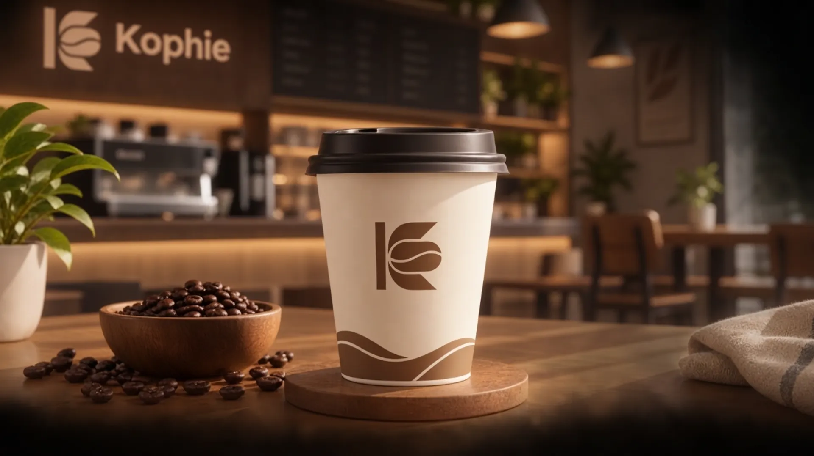
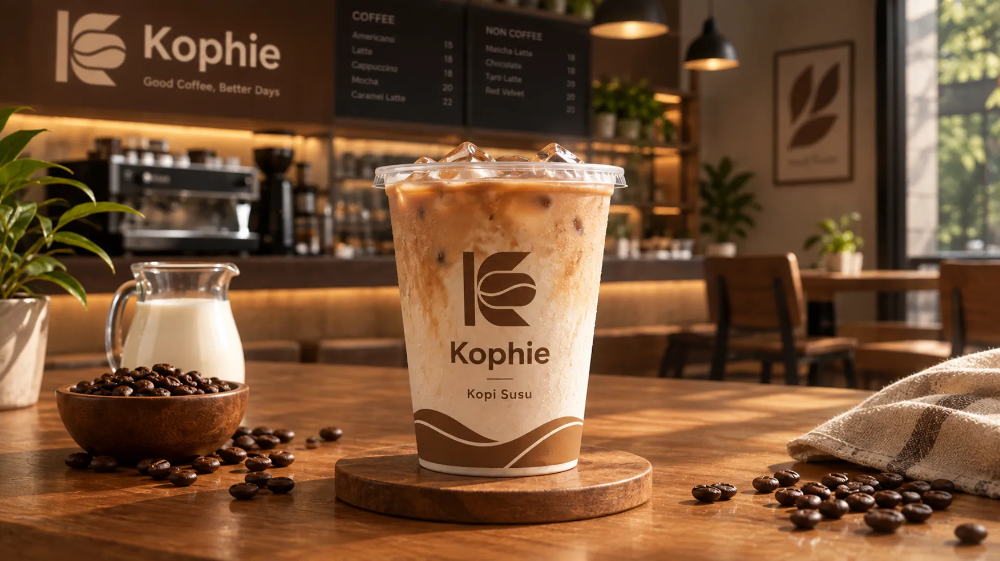
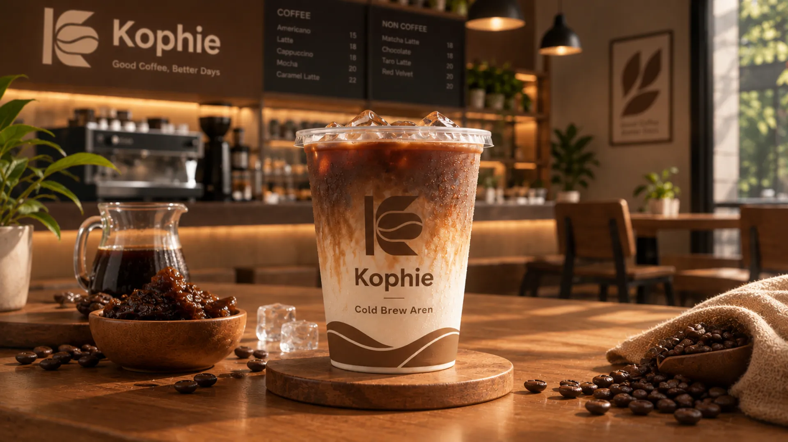

UMKM Pekalongan
Kophie
Kophie menyajikan kopi lokal pilihan yang diracik khusus untuk menemani setiap momen belajar, bekerja, dan berdiskusi Anda.
Lokasi
Rowolaku, Kec. Kajen, Kabupaten Pekalongan, Jawa Tengah 51161
Jam Operasional
08:00 - 22:00 WIB
Profil Singkat

Kophie hadir untuk menemani rutinitas harian Anda dengan menyuguhkan kelezatan biji kopi pilihan dari para petani lokal. Kami berkomitmen untuk selalu memberikan pelayanan yang hangat dan ramah demi menciptakan pengalaman menikmati kopi yang istimewa setiap hari.
Produk Best Seller
-

Kopi Tubruk Signature
Nikmatnya rasa klasik berpadu aroma kuat, pilihan tepat untuk mengawali hari.
Rp18.000
-

Kopi Susu
Kelembutan susu dan pekatnya kopi berpadu sempurna dalam setiap tegukan.
Rp18.000
-

Cold Brew Aren
Rasa kopi dingin dengan sentuhan manis gula aren untuk membangkitkan semangat.
Rp21.000